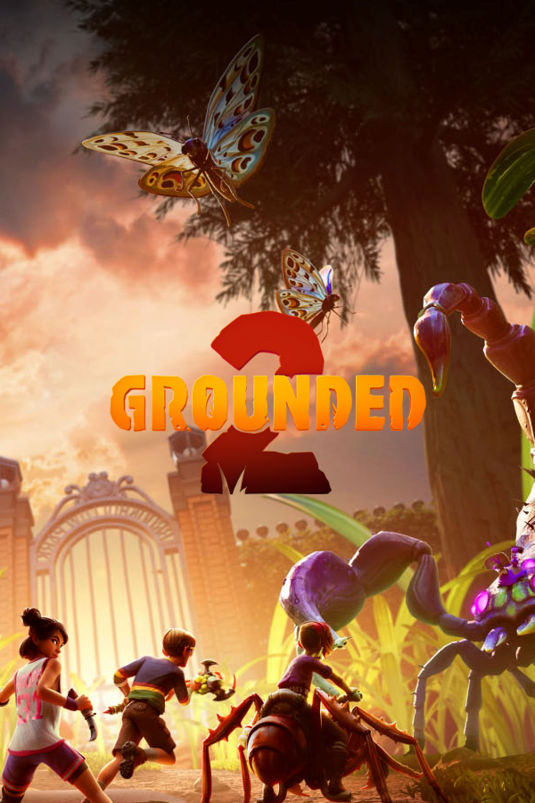

Grounded 2
Every archived year-end list appearance, including placement and points earned.
About the Game
When you've been shrunk to the size of an ant, what was once familiar is now a wild, uncharted frontier. Traverse sprawling manmade spaces overgrown with nature with buggies that can fight alongside with you, uncover hidden secrets, and fight to survive in a world much larger than the backyard. The playground may seem familiar, but beneath its bright colors and towering structures lie mysteries hidden in plain sight. Are you ready to uncover them? Survive, Adapt, Overcome The world is relentless, but so are you. Shape your adventure with unique archetypes, each offering distinct abilities to match your playstyle. Whether you rely on precision, cunning, or sheer strength, you’ll need every advantage to survive against the threats lurking in the park. Stronger Together The perils of the park are daunting alone, but with friends, every challenge becomes an adventure. Work together to build, fight, and uncover the secrets buried beneath the grass. Whether you’re facing danger side by side or continuing your journey in a shared world, survival is always better with allies. Walking is Bogus Introducing Buggies They scurry, they fight, and now—they help you survive. Hatch, raise, and ride your own insect friends - buggies! Saddle up and ride through the park, command them in battle, or have them help gather resources. The right partner could mean the difference between thriving and barely surviving. A Shadow That Follows You The threat is always there—watching, learning, waiting. You don’t know where it’s coming from, only that it never leaves. The deeper you dig, the closer it gets. Some mysteries should stay buried, but it’s too late now. It knows you’re looking. And it’s ready. Every answer drags you deeper, every step invites something closer. You were never alone. You thought you were in control. You were wrong.
| Developer | Obsidian Entertainment, Eidos Montreal |
|---|---|
| Publisher | Xbox Game Studios |
| Genres | Action, Adventure |
| Platforms | PC, Xbox Series S/X |
SingleplayerMultiplayerFull controller supportRPGCo-opOpen WorldcooperativeFirst-PersonThird PersonHorrorOnline Co-OpExploration
Where to Buy
Game information provided by RAWG.
Points by Year
List History
| Year | Source | List | Placement | Points |
|---|---|---|---|---|
| 2025 | Maxim | The Best Video Games of 2025 | 5 | 5 |